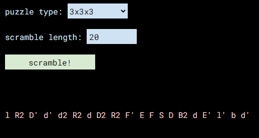

Blog Post / June 11th, 2022
Rubik's Cube Scrambler 2.0
I have rewritten my Rubik's Cube Scrambler to generate scrambles for more cubes. In addition to the previous options, the new drop-down menu lets you pick from the 4x4, 5x5, Rubik's Edge, pyraminx, and gear cube.* Then you can choose how long you want the scramble to be (default 20), and press scramble! If you'd like to compare it to v1, you can go to pinniped.page/projects/cube-old until I remove it.
*I may have the moves wrong, please tell me on Discord if that's the case.